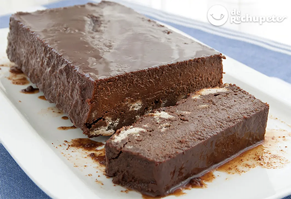

Recetas dulces, sencillas y económicas
Pudin de Chocolate

Ingredientes
- 1 barra de pan pequeña
- 150g. de azúcar
- 6 huevos
- 1/2 litro de leche
- 1 cuchara de ralladura de naranja
- 1 cuchara de postre de esencia de vainilla
- 150g. de chocolate en barra 70% cacao
- 1 cucharada de cacao en polvo
- 150ml. de caramelo líquido especial para postres
Preparación del Pudin
- Calentar la leche con la cucharada de cacao en polvo y la ralladura de naranja. Dejar que se caliente, pero no hierva, a fuego lento, aprox. 10min.
- Trozar la tableta de chocolate y añadir a la leche caliente. Remover lentamente y con cuidade con una cuchara de madera durante 5 min. para que no se pegue/queme.
- En un bowl, mezclar los huevos y el azúcar. Batir hasta que quede una mezcla espumosa.
- Añadir el pan cortado en rebanadas a la leche y luego, agregar la mezcla de huevos y azúcar.
Preparación del Caramelo
- Colocar un tarrito al fuego y echar 5 cucharadas de azúcar. Al minuto, añadir una cucharada de limón exprimido. Realizar el proceso a fuego medio.
- Agregar el agua (1/2 vaso pequeño) y remover el almíbar en círculos con una cuchara de madera por 5 min. Cuando la mezcla tome un color como el de la miel, es porque se caramelizó.
- Bañar el molde a utilizar para el pudin con el almíbar. Dejar que se enfríe y luego colocar la masa cremosa del pudin de chocolate.